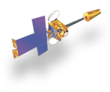
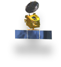

During the month of August 2018, most of the districts of Kerala, mainly, Iddukki, Patthanmthitta, Ernakulam, Trichur and Palakkad received more than expected rainfall (deviation by more than 164% as per India Meteorological Department (IMD) report) from this year’s South West monsoon. In just the first 20 days of the month, Kerala has received the highest rainfall for the entire month in 87 years, with Idukki district breaking a 111-year record for the highest rainfall for the month, as per IMD’s records. This rainfall has brought flood in several parts of the state.
Aug 30, 2018 : Successful Acceptance Hot Testing of Cryogenic Engine
Aug 30, 2018 : AstroSat Picture of the Month Aug, 2018
Aug 17, 2018 : UNNATI (UNispace Nanosatellite Assembly & Training by ISRO)
Aug 16, 2018 : 72nd Independence Day Celebrations at ISRO HQ
Aug 12, 2018 : Dr.Vikram A Sarabhai Birth Anniversary

Supports telecommunication, television broadcasting, satellite news gathering,
societal applications, weather forecasting, disaster warning and Search and Rescue operation services.
The largest civilian remote sensing satellite constellation in the world - thematic
series of satellites supporting multitude of applications in the areas of land and water resources; cartography;
and ocean & atmosphere.

Spacecraft for research in areas like astronomy, astrophysics, planetary and
earth sciences, atmospheric sciences and theoretical physics.
Satellites for navigation services to meet the emerging demands of the Civil
Aviation requirements and to meet the user requirements of the positioning, navigation and timing based on
the independent satellite navigation system.
In the pursuit of its mission objectives in aeronautics and space exploration, we continues pushing the boundaries of its
own foundations. Often, new technologies are needed to either enhance current capabilities or enable future ones.
The Innovative Partnerships Program (IPP) provides the organizational structure for acquiring, maturing, infusing
and commercial technology and capabilities for our Mission Directorates, Programs and Projects through investments
and partnerships with Industry, Academia, Government Agencies and National Laboratories. As one of our Mission Support
Offices, the IPP supports all Mission Directorates and has Program Offices at each of the Centers. In addition to
leveraged technology investments, dual-use technology-related partnerships, and technology solutions for NASA, IPP
enables cost avoidance, and accelerates technology maturation.
IPP consists of the following program elements:
Technology Infusion Includes the Small Business Innovative Research (SBIR)/Small Business Technology Transfer
(STTR) Programs and the IPP Seed Fund.
Innovation Incubator Includes activities such as Centennial Challenges and new efforts to facilitate purchase
from services from the emerging commercial space sector.
Partnership Development Includes Intellectual Property management, Technology Transfer, and new innovative
partnerships.